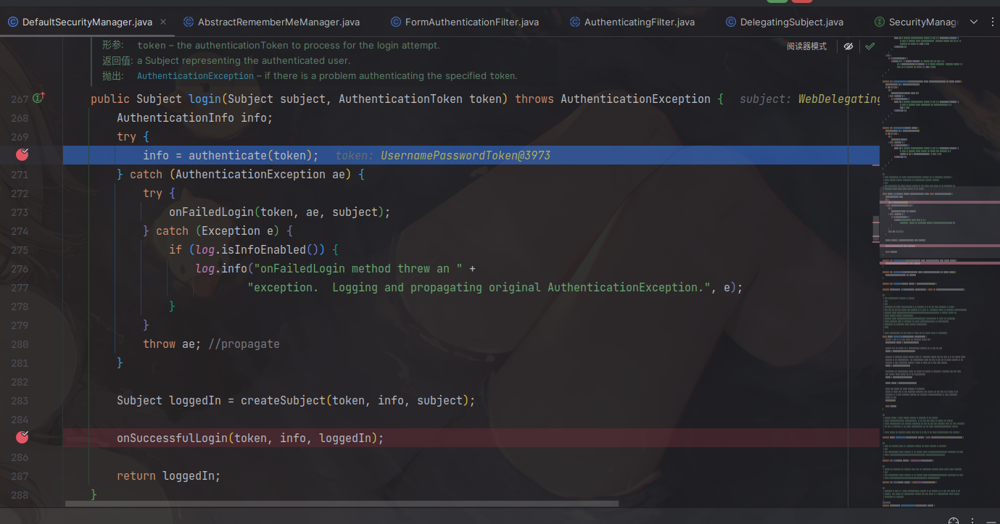

# 环境搭建
下载 https://codeload.github.com/apache/shiro/zip/refs/tags/shiro-root-1.2.4
java版本为：
idea打开其中的 /shiro-shiro-root-1.2.4/samples/web。pom中如下设置。
1 | <dependency> |
添加一个Tomcat本地服务，设置好不冲突的端口和工件。
点击启动后如果不报错，就会自动打开浏览器。
流程分析
加密及登陆过程
首先可以在/shiro-core/1.2.4/shiro-core-1.2.4-sources.jar!/org/apache/shiro/mgt/AbstractRememberMeManager.java中找到传说的硬编码的aes密钥
一个登陆流程是先从executeLogin() -> subject.login(token) -> securityManager.login(this, token) ,在这个login里面，info = authenticate(token);是负责验证帐号密码是否成功的，

跟进后一路到了doAuthenticate()中，这里通过getRealms()获取到数据源，然后通过doSingleRealmAuthentication()方法，对用户输入的帐号密码进行验证,之后返回info信息。
回到securityManager.login(this, token)中，在获取到info成功后，就会向下走到onSuccessfulLogin(token, info, loggedIn); -> rememberMeSuccessfulLogin(token, info, subject) -> rmm.onSuccessfulLogin(subject, token, info); 然后就到了AbstractRememberMeManager.java中，先使用forgetIdentity(subject);清除之前的Identity，然后创建新Identity（防止之前的认证信息被复用）。
之后进入 rememberIdentity(subject, token, info); -> rememberIdentity(subject, principals); -> convertPrincipalsToBytes(accountPrincipals);在这里面先将身份信息序列化为byte数组，再encrypt()加密，返回。返回后回到rememberIdentity()中，再进入rememberSerializedIdentity(subject, bytes);
在rememberSerializedIdentity()中。把加密的密文base64后，就设置为cookie返回了。
解密流程
在上面convertPrincipalsToBytes(accountPrincipals);中，有一个encrypt()，进入AbstractRememberMeManager.java中找到encrypt()，decrypt()就在下面。